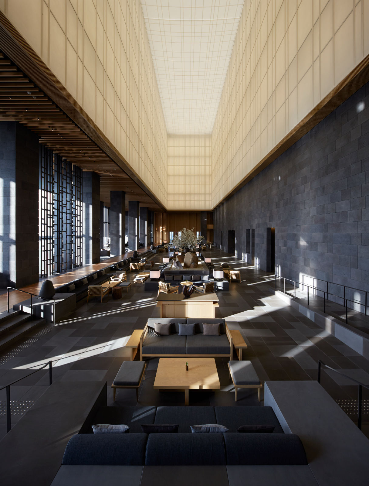
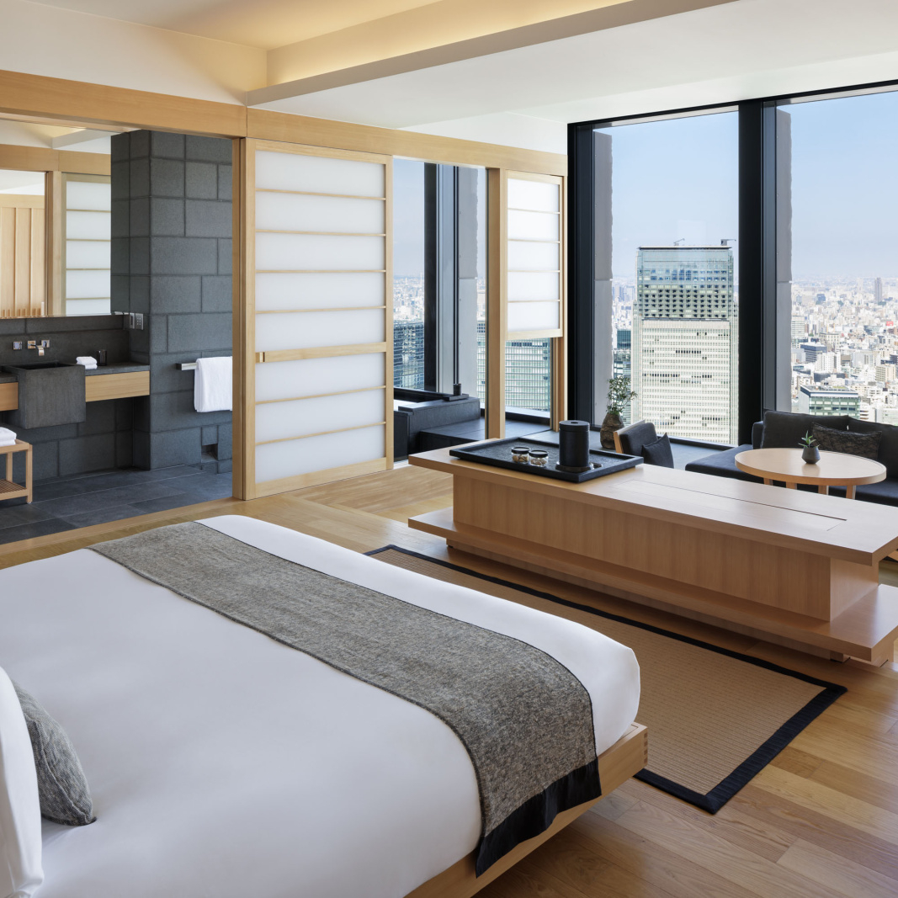
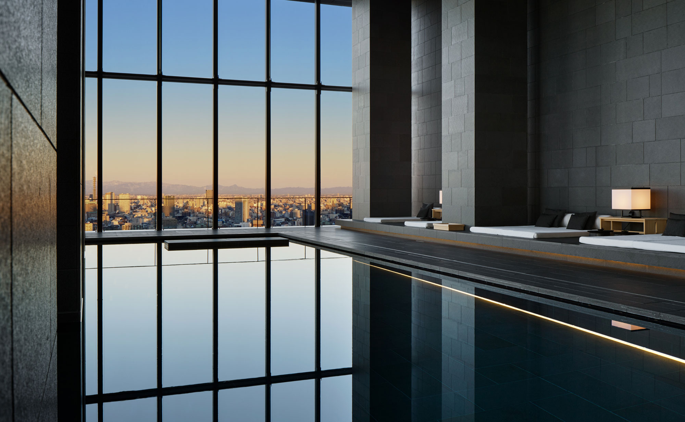

Tokyo Favorite
Aman Tokyo is the anchor: one of the absolute best urban hotels in the world.
Aman Tokyo is the hotel I would start with when a client says they want Tokyo to feel calm, private, and deeply luxurious without the hotel ever needing to shout. It sits high above Otemachi and turns the city into something almost quiet. The lobby is dramatic, the rooms are unusually spacious for Tokyo, and the whole property has that Aman ability to slow everything down.
What makes it unique
It feels like a sanctuary in one of the busiest cities on earth.
The design is the point: stone, wood, washi-inspired textures, huge windows, and a lobby that feels more like a temple in the sky than a hotel check-in. For clients who love architecture, privacy, wellness, and quiet service, Aman Tokyo is hard to beat.
Best For
Serene Tokyo luxury
Ideal for Aman loyalists, couples, design-minded travelers, and clients who want Tokyo handled with calm precision.
Known For
Lobby, spa, and space
The lobby, Aman Spa, 30-meter pool, and oversized rooms are the reasons this hotel stays in the global conversation.
Stay
84 rooms and suites
The room count keeps the experience feeling intimate, and the suites are serious by Tokyo standards.
Client Type
Quiet VIPs
Best for clients who value restraint, design, wellness, and a private rhythm over scene-driven hotel energy.



Rooms and suites
The rooms are one of the biggest selling points. Aman Tokyo gives clients a level of space that feels rare in the city, with deep soaking tubs, huge windows, and a very clean Japanese design language. The higher suites are where the hotel becomes especially compelling for guests who want privacy, long-view city drama, and a residential feeling without losing hotel service.
Dining and wellness
Dining includes Italian at Arva, sushi at Musashi by Aman, and the Lounge by Aman, which is exactly the kind of room where you want to start or end a Tokyo night. The spa is a major reason to stay here too. After long days moving between Ginza, Omotesando, private sushi counters, galleries, and cultural touring, the pool and wellness floor make the hotel feel like a reset button.
Tokyo through KARCH
I would build this stay around food and culture: sushi, kaiseki, tempura, cocktail bars, private shopping, a guide for neighborhoods like Ginza and Aoyama, and maybe a slower morning around the Imperial Palace or a private tea experience. Aman is the right base when the client wants the city to feel effortless instead of overwhelming.
My honest take
Aman Tokyo is not for someone chasing a loud lobby scene. It is for the client who wants the best version of calm. If the trip needs to feel serene, intentional, and beautifully controlled, this is the first Tokyo hotel I would bring up.